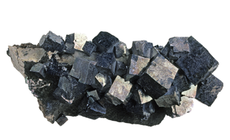
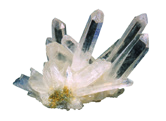
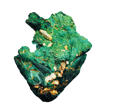
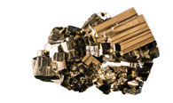
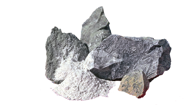

3. Los minerales
Practicar y avanzar 21-26
Un mineral es un sólido natural e inorgánico de composición química definida y cuyos átomos se disponen de forma ordenada.
La galena es un mineral
- Es un sólido natural. No se consideran minerales a los líquidos, a los gases ni a las sustancias fabricadas por el ser humano.
- Es inorgánico. No se clasifica como minerales a las sustancias originadas por los seres vivos ni a aquellas que forman parte de ellos.
- Tiene composición química definida. No son minerales las sustancias que tienen una proporción variable de elementos químicos.
- Tiene sus átomos ordenados. Las sustancias cuyos átomos están desordenados se denominan mineraloides.
3.1 Propiedades de los minerales
Las propiedades de los minerales dependen de dos factores: su composición y el modo en que se disponen sus átomos. Cada mineral tiene unas propiedades específicas.
Raya
Es el color del polvo fino de un mineral.

Exfoliación
Es la forma característica en que se rompe un mineral.

Color
Es el color de la luz que refleja un mineral cuando es iluminado con luz blanca.

Dureza
Es la resistencia que opone un mineral a ser rayado. Se determina con la escala de Mohs, mediante la comparación con diez minerales que se toman como referencia.
Brillo
Es el aspecto de la superficie de un mineral cuando refleja la luz.

Clasificación de la dureza
Baja, Media, Alta:
- Baja: 1. Talco 2. Yeso 3. Calcita 4. Fluorita 5. Apatito
- Media: 6. Ortosa 7. Cuarzo 8. Topacio 9. Corindón 10. Diamante
